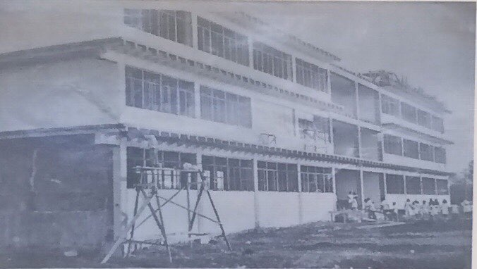
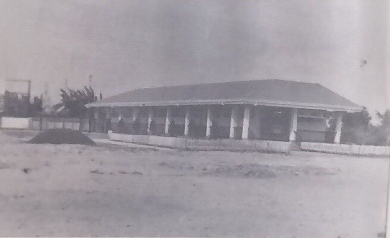
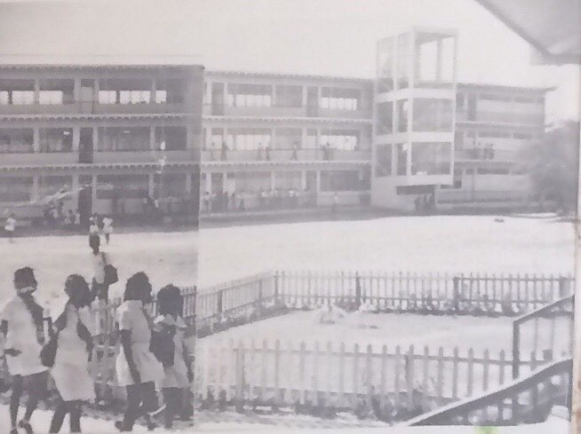

SENIOR HIGH SCHOOL
Parañaque National High School - Main
Location

Direction
Kay Talise St. Dr. A.
Santos Ave., San
Dionisio Parañaque
City, Metro Manila,
Philippines, 1700
Parañaque
Contact
üìû 826-4014
✉️ pnhs.main@yahoo.com
HISTORY
Parañaque National High School, formerly Parañaque Municipal High School was founded in 1969 through the initiative of then Mayor Florencio V. Bernabe, Sr. This was an offshoot of the Mayor genuine commitment and fervor to lead his citizenry to self-sufficiency through education.
The opening of PMHS in S.Y 1969-1970 started with the first batch of first year high school boys and girls numbering 512. The school with a teaching force of nineteen (19) teacher including the administrative staff headed by its first principal, Mrs. Angelita R. Samson, occupied the rented Nery Building in Kabihasnan, San Dionisio, Parañaque
The passing years saw tremendous increase in the school population which necessitated the transfer of the school in 1973 to its present site of 12,000 square meters at Dr. A. Santos Avenue, Sucat, San Dionisio. PMHS has metamorphosed into a more complex structure as it branched out into several annexes — La Huerta, Don Galo, Baclaran High School, PNHS Baclaran, and San Martin de Porres (now, Dr. Arcadio Santon National High School, an independent school). In 1989, Parañaque Municipal High School, was nationalized and some of its annexes were granted their independence as they meet the basic requirements needed by the Department of Education.
At present, Parañaque National High School has 5 annexes namely PNHS - La Huerta, PNHS - Don Galo, PNHS - Sto. Niño, PNHS - Tambo, and PNHS - Don Bosco.
The opening of PMHS in S.Y 1969-1970 started with the first batch of first year high school boys and girls numbering 512. The school with a teaching force of nineteen (19) teacher including the administrative staff headed by its first principal, Mrs. Angelita R. Samson, occupied the rented Nery Building in Kabihasnan, San Dionisio, Parañaque
The passing years saw tremendous increase in the school population which necessitated the transfer of the school in 1973 to its present site of 12,000 square meters at Dr. A. Santos Avenue, Sucat, San Dionisio. PMHS has metamorphosed into a more complex structure as it branched out into several annexes — La Huerta, Don Galo, Baclaran High School, PNHS Baclaran, and San Martin de Porres (now, Dr. Arcadio Santon National High School, an independent school). In 1989, Parañaque Municipal High School, was nationalized and some of its annexes were granted their independence as they meet the basic requirements needed by the Department of Education.
At present, Parañaque National High School has 5 annexes namely PNHS - La Huerta, PNHS - Don Galo, PNHS - Sto. Niño, PNHS - Tambo, and PNHS - Don Bosco.
PMHS as it was…



School Hymn
Alma Mater Song
O, PNHS Alma Mater Thou stand majestic in the verdant plains. With strength and hope, You make us live; With braver hearts, With bigger dreams. You make our lives complete. You vanish all our fears. The joys of wisdom, The laughter of youth, All these we'll treasure; All through the years.